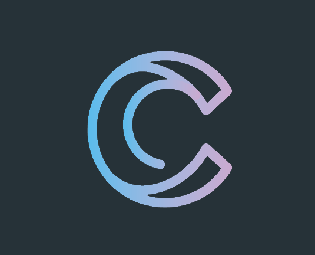

<router-outlet></router-outlet>

<mat-sidenav-container fullscreen>
  <mat-toolbar color="primary">
    
    <span class="flexExpand"></span>

    <div class="toolbar-tools">
      <a class="menu-item" mat-button routerLink="/about" routerLinkActive="menu-item-active">
        <mat-icon>info</mat-icon>
        <span> About</span>
      </a>
      
      <a *ngIf="this.authService.isLoggedIn" class="menu-item" mat-button routerLink="/courses" routerLinkActive="menu-item-active" [routerLinkActiveOptions]="{exact:true}">
        <mat-icon>library_books</mat-icon>
        <span> Courses</span>
      </a>
      
      <a mat-button class="menu-item" [routerLink]="[{outlets: {chat: ['helpdesk-chat']}}]">
        <mat-icon>help</mat-icon>
        <span> Help</span>
      </a>
      
      <a *ngIf="!this.authService.isLoggedIn" mat-button class="menu-item" routerLink="/login" routerLinkActive="menu-item-active">
        <mat-icon>account_circle</mat-icon>
        <span> Login</span>
      </a>
      
      <a *ngIf="this.authService.isLoggedIn" mat-button class="menu-item">
        <mat-icon>exit_to_app</mat-icon>
        <span> Logout</span>
      </a>
    </div>
  </mat-toolbar>

  <router-outlet></router-outlet>

</mat-sidenav-container>
